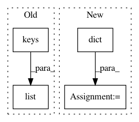

bb21b3314c57ec4208af8eed8041091cc51ec68a,anvio/profiler.py,BAMProfiler,generate_variabile_codons_table,#BAMProfiler#,288
Before Change
db_entry["coverage"] = e["coverage"]
db_entry["departure_from_reference"] = e["departure_from_reference"]
db_entry["codon_order_in_gene"] = codon_order
for codon in list(constants.codon_to_AA.keys()):
db_entry[codon] = e["frequencies"][codon]
variable_codons_table.append(db_entry)
After Change
entries = zip(*split.SCV_profiles[gene_callers_id].values())
for entry in entries:
entry_dict = dict(zip(split.SCV_profiles[gene_callers_id].keys(), entry))
variable_codons_table.append(entry_dict)
variable_codons_table.store()
In pattern: SUPERPATTERN
Frequency: 3
Non-data size: 4
Instances
Project Name: merenlab/anvio
Commit Name: bb21b3314c57ec4208af8eed8041091cc51ec68a
Time: 2020-02-26
Author: kiefl.evan@gmail.com
File Name: anvio/profiler.py
Class Name: BAMProfiler
Method Name: generate_variabile_codons_table
Project Name: scikit-multiflow/scikit-multiflow
Commit Name: 7eff79deedbf2e40d805b3ab5d3ac0c6d8ca334f
Time: 2019-03-01
Author: gwalid94@gmail.com
File Name: src/skmultiflow/trees/nominal_attribute_class_observer.py
Class Name: NominalAttributeClassObserver
Method Name: observe_attribute_class
Project Name: analysiscenter/batchflow
Commit Name: cb45448315bc0f4956e45b7e768ce557a2198050
Time: 2017-12-21
Author: rhudor@gmail.com
File Name: dataset/models/tf/layers/conv_block.py
Class Name:
Method Name: